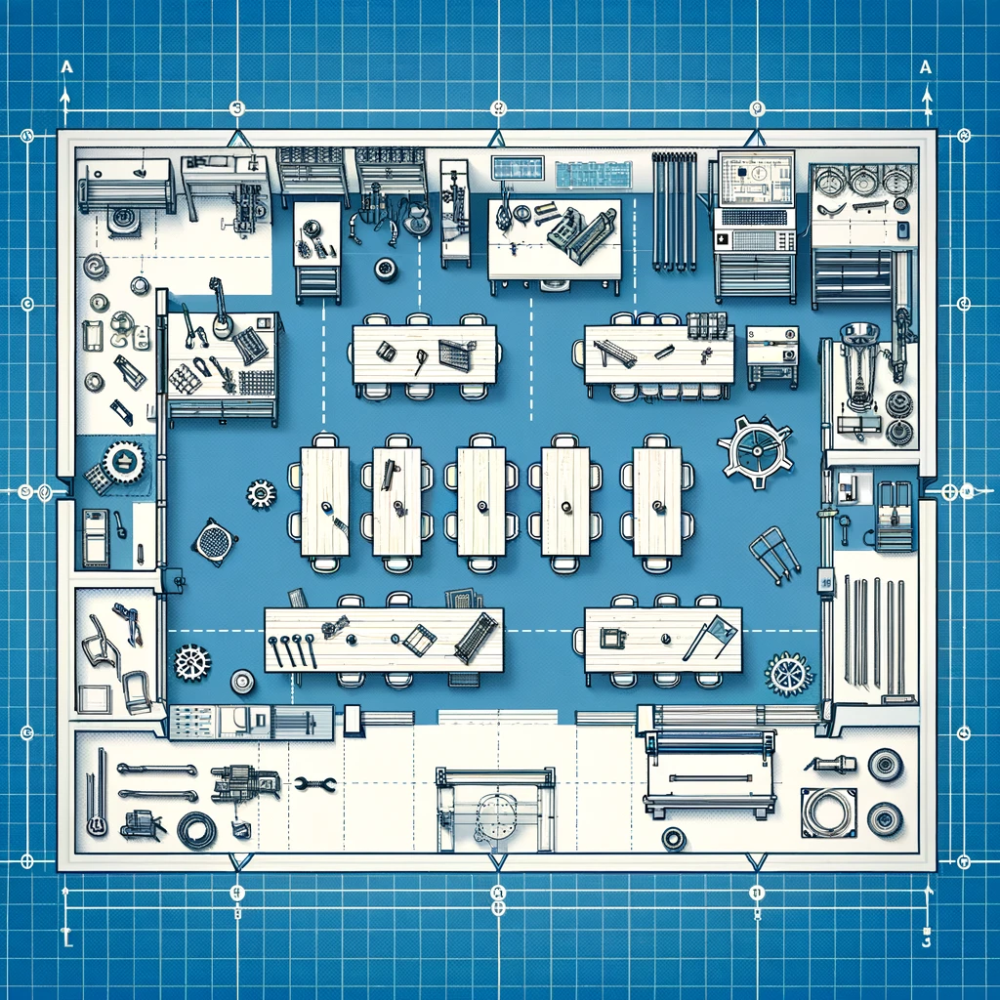
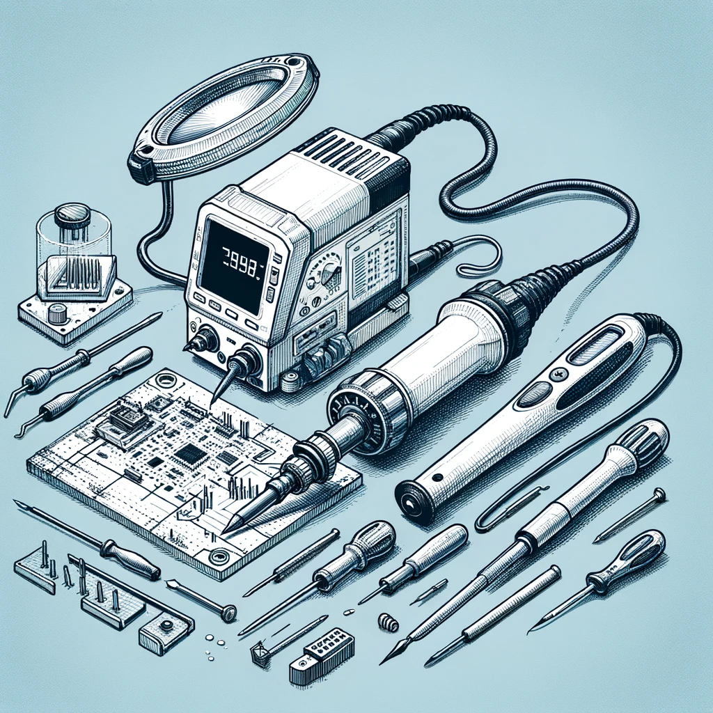
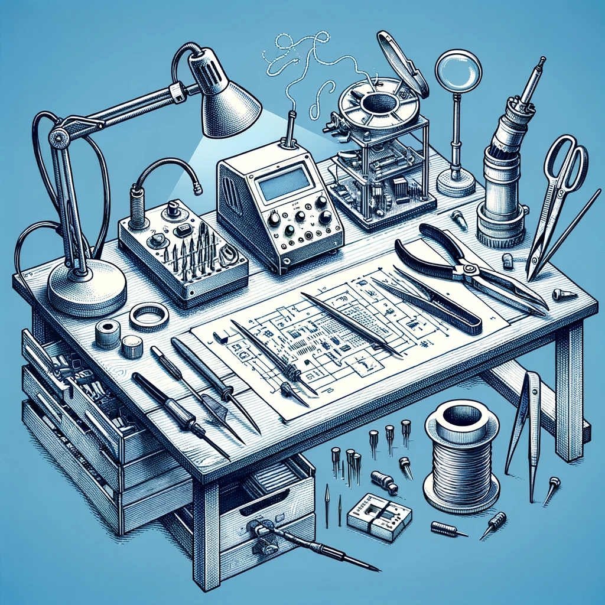

Maker Lab 3: School Lab
STEAM Teaching & Learning ESM 503, Spring 2024
Key words: STEAM, Maker Lab, Constructionism, 3D printing, laser cutting, LEGO robotics, microbit, arduino
Description

In the “school lab” students are challenged to conceive of and design their own STEAM workshop, which they co-teach for the public as a workshop at the MIXI lab during our Spring STEAM mini conference. To create their workshop, they will practice backwards design to develop and execute an effective lesson, including assessments of learning. Developing a specialized workshop allows students to solidify expert-level mastery of specific aspects of the maker lab; teaching these skills to an authentic audience helps them reflect on the knowledge they’ve acquired in the previous labs while practicing the lab-based pedagogical techniques which they’ve previously experienced as students. [prerequisite: labs 1 & 2]. 25 hours of fieldwork is required.
Course Goals
The student will be able to:
- Define and identify characteristics of equitable classrooms where all learners have access to ensuring academic achievement.
- Analyze multiple frameworks used to support the development, implementation, and assessment of effective STEAM curricula.
- Identify and practice different models of co-teaching to support teaching and learning.
- Reflect and critique one own’s planning, instruction and assessment plans implemented for continual improvement to ensure an equitable and effective STEAM classroom.
Class Information
Instructor:
Class dates: Tuesday January 23 - Tuesday May 15
Office hours:
- Tuesday 3pm-5pm, Brooklyn Campus
- office hours by appointment
Required Textbook
There is no required textbook for this course. Course readings will be made available through the course website.
Class Schedule
| Date | Format | Topic | Due | |
|---|---|---|---|---|
| 01 | Jan 23 | online | Roots of Maker Ed | |
| 02 | Jan 30 | in person | Intro LEGO Robotics | |
| 03 | Feb 06 | online | Play and Creativity | |
| 04 | Feb 13 | in person | LEGO Rube Goldberg | |
| 05 | Feb 20 | online | Robotics & CT | LEGO Portfolio Report |
| 06 | Feb 27 | in person | Rube Goldberg Presentations | |
| 07 | Mar 05 | online | Equity in the lab | |
| 08 | Mar 12 | in person | Workshop ideas | |
| - | Mar 19 | spring break | - | Animal Portfolio Report |
| 09 | Mar 26 | in person | Workshop Pitches | Workshop Pitch, self eval |
| 10 | Apr 02 | online | Maker Ed Challenges | |
| 11 | Apr 09 | in person | Workshop Abstract | |
| 12 | Apr 16 | online | Workshop Lesson Plans | Material List |
| 13 | Apr 23 | online | Studio | |
| 14 | Apr 30 | in person | Demo Presentations 1 | |
| 15 | May 07 | in person | Demo Presentations 2 | |
| 16 | May 14 | in person | Mini Conference | Mini Conference Portfolio, self eval |
This is a hybrid course with some in-person meetings and some online meetings. Mostly, we will meet in-person every other week, but see the schedule above for details. Online weeks will be oriented around completing course readings and working independently or in teams on assignments. There will not be full-class online meetings on Tuesdays. In-person classes will feature discussions of course readings, group working sessions, and maker lab activities. Towards the end of the term we will focus on developing your STEAM workshops.
Grading & Assignments
| Assignment | PCT |
|---|---|
| Participation & attendance 1 | 15% |
| Participation & attendance 2 | 15% |
| LEGO Portfolio Report | 15% |
| Workshop Pitch | 10% |
| Mini Conference Workshop | 45% |
Participation & attendance

One of the tenets of this class is that learning is more vibrant when we work on it together. Collectively, we will work to develop new understandings of the potential and challenges of maker education. In our labs, we will work to design and test new curricular projects. This cannot happen if you do not attend class, are not prepared, or arrive late.
You will be given two participation grades, and each time it will be the average of the instructor’s assessment and your self-assessment. The self-assessment is straightforward, you will assign a numeric grade (0-15 for participation 1, 0-10 for participation 2) and a brief statement explaining your criteria. Your criteria will not exactly match my criteria, as we all value different aspects of learning. Here are the things I am looking for:
- Preparation: You have completed the assigned readings and are ready to discuss them.
- Respect: You are actively engaged in the class discussion and activities, including listening to others and sharing your own ideas. In team projects, you respect deadlines and meeting times, and don’t add to the stress and workload of your teammates.
- Risk taking: In some ways, deep learning is always uncomfortable. Full participation means you are willing to take risks and make mistakes. It also means that you go beyond the minimum requirements and shared materials to help us push boundaries together.
Attendance is required for all in person classes. There are no excused absences. If you miss a class for any reason, you will lose 2 points from your final grade. If you miss more than 4 of the total 9 in person classes, you may be asked to withdraw or repeat this course.
The final class “mini conference” on Tuesday May 14 is absolutely mandatory. Please make any arrangements necessary to be present for this class.
Portfolio Reports
Everyone should have an online portfolio/website that they began in Maker Lab 1. You will continue to use this portfolio to document your work in Maker Lab 3. Your portfolio reports should have photos and videos of the projects you are working on, and written reflections on the work. Although I will be observing your work directly, your grade for the LEGO lab, Animal lab, and Mini Conference presentation will be based on the record you document with your portfolio.
LEGO Lab
You will work with a team to design, test and build a LEGO “Rube Goldberg” machine. The core of your design will be LEGO Spike Prime, but you can (and should) incorporate non-LEGO materials as well.
Laser Cut Animal
STEAM Workshop

The course culminates in a public mini-conference where you will lead a 45 minute workshop with one teammate. The audience for the conference will be STEM teachers (your peers and others like you), faculty, friends from the doctoral program in education at Fordham University, and high school students invited to attend.
Your goals for your workshop are:
- demonstrate a deep knowledge of one of the techniques of the maker lab and steam education
- design a workshop that addresses a hard pedagogical problem
- create a presentation that is thorough, engaging, and accessible to the audience
To document your work, you will create the following:
- workshop title
- workshop abstract / description
- a workshop lesson plan (that others can follow)
- a detailed material list, including any materials that need to be ordered
- a post-workshop reflection (including any photos an videos that document the work)
Workshop Pitch
Although this is a pair project, everyone will design their own workshop pitch. The pitch will be a 5 minute presentation where you share your idea for a great workshop. After hearing and discussing all of the pitches, we will form teams of 2.